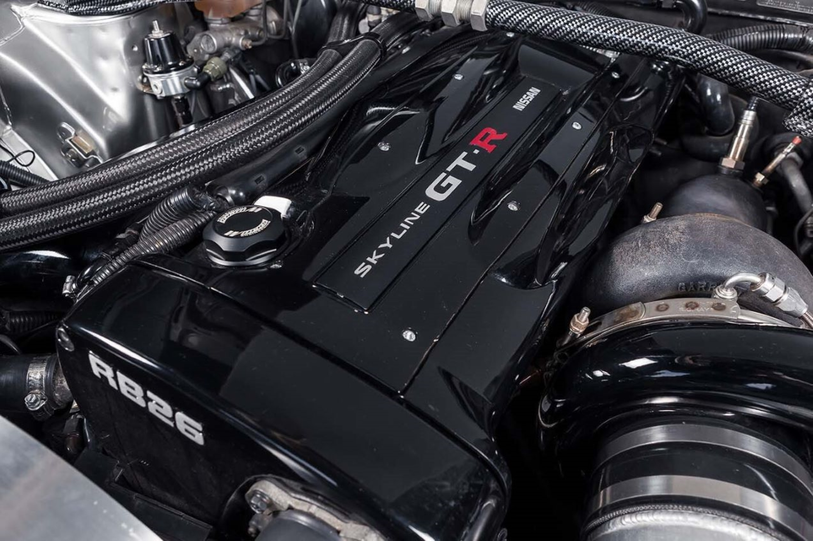

-
Styl i Design:
Skyline R34 GT-R charakteryzuje się agresywnym i aerodynamicznym designem, który nie tylko zapewnia doskonałe właściwości aerodynamiczne, ale także nadaje mu charakterystyczny wygląd. Z przodu samochodu dominuje charakterystyczna, duża chłodnica i agresywnie ukształtowane reflektory, które nadają mu dynamiczny wygląd. Z boku zauważalne są muskularne nadkola, podkreślające sportowy charakter pojazdu.

-
Silnik:
Serce Skyline R34 GT-R stanowi silnik RB26DETT, rzędowy sześciocylindrowy, turbodoładowany silnik o pojemności 2.6l oraz legendarnym statusie. Jest to jednostka znana z niezawodności i potężnego potencjału tuningowego. RB26DETT oferuje imponującą moc wyjściową oraz szybkie reakcje na gaz, co sprawia, że Skyline R34 GT-R jest jednym z najszybszych samochodów na trasie i torze.

-
Technologia:
Skyline R34 GT-R wyposażony jest w zaawansowane systemy kontroli trakcji i stabilności, które pomagają kierowcy utrzymać pełną kontrolę nad pojazdem nawet w trudnych warunkach jazdy Innowacyjny system napędu na cztery koła ATTESA E-TS (Advanced Total Traction Engineering System for All - Electronic Torque Split) zapewnia doskonałą trakcję i przyczepność na różnych nawierzchniach oraz podczas dynamicznej jazdy.
-
Wyścigowe dziedzictwo:
Skyline R34 GT-R odnosił sukcesy zarówno na ulicach, jak i torach wyścigowych, zdobywając tytuły mistrza w wielu prestiżowych zawodach, takich jak japońska seria wyścigowa JGTC (obecnie Super GT) oraz różne imprezy driftowe i time attack. Dzięki swojej legendarności i wszechstronności, Skyline R34 GT-R stał się ikoną w świecie motoryzacji i jest bardzo ceniony przez fanów samochodów sportowych na całym świecie.
-
Rzadkość i wartość kolekcjonerska:
Ze względu na swoją popularność i kultowy status, Skyline R34 GT-R jest obiektem pożądania dla kolekcjonerów samochodów. Dobrze utrzymane egzemplarze mogą osiągać wysokie ceny na rynku wtórnym, a modele w oryginalnym stanie są coraz trudniejsze do znalezienia.
Nissan Skyline R34 GT-R to nie tylko samochód, ale prawdziwa legenda, która nadal inspiruje i zachwyca miłośników motoryzacji na całym świecie.